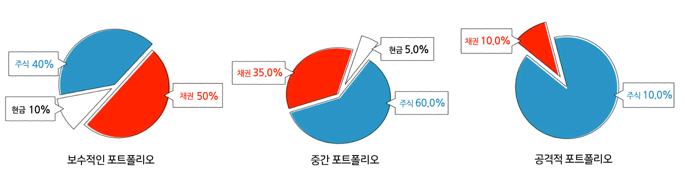

risk
위험감내도(성향)
위험 감내는 투자에서 얼마나 많은 위험을 감내할 수 있는지 얘기합니다.
투자에는 항상 손실이 발생할 위험이 따릅니다.
그러나 더 많은 수익을 내는 투자 역시 더 위험한 경향이 있습니다.
위험 감내성을 파악하면 이 두 문제 사이의 적절한 균형을 파악하는 데 도움이 될 수 있습니다.
즉, 큰 손실을 방지하고 수익을 높이려는 목표를 세울 수 있습니다.
-
 결정 방법
결정 방법위험 감내도는 은 두 가지 주요 고려 사항으로 요약됩니다. 즉, 리스크를 감당할 수 있는 재정적 능력과 위험에 대한 개인적 편안함 정도입니다. 각 고려 사항은 다음과 같습니다.
risk 결정방법 재정적 능력 편안함 정도 중요한 이유 투자 포트폴리오가 급격히 급락했다면 재정에 치명적일까요, 아니면 되돌릴 다른 자원이 많이 있습니까? 투자가 10% 또는 20% 감소 하면 머리를 뽑으시겠습니까, 아니면 시장의 기복을 감당할 수 있습니까? 고려해야 할 사항 - 돈이 필요할 때 까지의 시간
- 기타 재원
- 기타 투자
- 투자하는 목표가 얼마나 중요한지
- 투자지식 수준
- 돈을 잃을 가능성에 대한 느낌
- 시장이 하락한 후 판매를 피할 수 있는지 여부
일반적으로 말해서, 더 긴 시간 범위, 많은 다른 재정 자원, 그리고 덜 중요한 목표를 가지고 있다면 더 높은 위험 감내도를 갖게 될 것입니다. 마찬가지로, 투자에 대해 더 많이 알고 있고 시장에서의 편안함 정도가 높을수록(가끔은 이러한 상황이 발생하므로) 더 많은 위험을 감내할 수 있습니다.
위험 감내도를 계산하는 공식은 특별히 정의 되어 있지 않습니다. 재무 설계사 등은 일반적으로 신규 투자자에게 위험 감내 설문지를 제공하고 답변에 따라 위험감내(또는 위험성향)을 결정합니다.
risk 결정방법 보수적 중간 공격적 가장 낮은 위험 허용 범위 중간 위험 허용 최고의 위험 허용 범위 낮은 재정적 능력과 개인적인 안락함 중간 어딘가의 능력 및 또는 편안함 수준 높은 재정적 능력과 개인적인 안락함 위험 감내도를 사용하여 자산 배분 또는 투자 포트폴리오에서 주식, 채권 및 기타 자산에 투자할 금액을 정할 수 있습니다. 자산 배분의 미세 조정은 복잡할 수 있지만, 큰 그림에서는 잠재적인 리스크와 보상 사이에서 적절한 균형을 찾는 것이 중요합니다.
다음은 이러한 세 가지 주요 위험 허용 범주가 실제 포트폴리오로 전환하는 방법입니다.
중요한 이유높은 위험 감내성을 갖는 것이 최선의 결과로 들릴 수도 있지만, 스스로를 평가할 때는 정직하게 하는 것이 중요합니다.
선택한 전략이 너무 공격적이면 시장이 하락할 때 투자자산을 팔고 싶어질 수 있는데, 이는 손절하고 투자자산이 반등할 때 손해를 본다는 뜻입니다.. 가격이 떨어진 후 투자자산을 팔면 장기적인 수익을 망치는 경향이 있습니다.
하지만 다른 한편으로, 저축예금계좌에 돈을 보관하는 것만으로는 결코 제대로 된 수익을 얻지 못한다는 것을 의미합니다. 그 안은 안전하다고 느껴질지 모르지만, 예를 들어, 편안한 노후 자금을 마련할 기회는 잃는 것입니다.결론위험감내도는 손실을 견딜 수 있는 재정 능력과 시장의 부침에 대한 편안함 정도를 말합니다. 잠재적 보상과 잠재적 위험의 적절한 균형을 갖춘 투자 포트폴리오를 선택할 수 있도록 위험감내도를 이해하는 것이 중요합니다.
재미있는 사실- "페니 주식"(즉, 주가가 매우 낮은 주식, 잡주)은 귀엽게 들릴 수 있지만, 믿을 수 없을 정도로 위험한 투자일 수 있습니다. 그것은 부분적으로 주식 중에 사기 비율이 높기 때문이다. 하지만 그것은 또한 분모의 냉혹한 계산 때문이기도 합니다. (100달러 주식에 50센트를 빼면, 0.5%의 손실에 불과합니다. 1달러짜리 주식에 대해 50센트를 잃으면 50%의 손실입니다.)
- 대부분의 사람들은 그들의 뇌가 코르티솔을 방출하기 때문에 위험한 상황에 대한 싸움이나 비행 반응을 경험합니다. 그러나 아드레날린 중독자들의 뇌는 "기쁨" 신경전달물질인 도파민을 방출합니다.
- 위험을 덜 감수하는 것이 수익률을 낮춘다는 것을 의미하지는 않습니다. 여성은 남성보다 더 보수적으로 투자하지만 (평균적으로) 더 나은 수익을 얻는 경향이 있는데, 이는 아마도 그들이 덜 거래하기 때문일 것이라는 설명이 있습니다.
핵심사항- 위험감내도란 투자로 위험을 떠맡을 수 있는 능력/의향을 말합니다.
- 두 가지 주요 고려 사항은 전반적인 위험 허용 범위입니다. 즉, 위험 를 감당할 수 있는 재정 능력과 위험에 대한 개인적 편안함 수준입니다.
- 잠재 수익률이 더 높은 투자는 대개 더 위험합니다. 충분한 수익은 얻을 수 있지만 실제 감당할 수 있는 것보다 더 많은 위험을 감내해야 하는 것을 피할 수 있도록 투자자 여러분의 위험 허용 범위를 파악하는 것이 중요합니다.
- 위험 감내도 파악을 통해 주식, 채권 및 기타 투자의 혼합으로 설명되는 올바른 자산 배분을 선택할 수 있습니다.
변동성에 대한 사실 몇가지- 미국 주식 시장의 변동성을 측정하는 지수인 VIX를 추적하는 수많은 ETF중 하나로 변동성, 자체에 투자할 수 있습니다. (하지만, 장기적으로 손해를 보는 경향이 있습니다.)
- 주식시장(및 기타 위험 투자)은 약세장이나 투자자들이 위험에 대해 걱정할 때마다 변동성이 커지는 경향이 있습니다.
핵심사항- 변동성은 투자자산의 가격 변동이 얼마나 불안정하거나 매끄러운지를 나타냅니다.
- 변동성이 높으면 투자자산이 더 큰 폭의 가격 변동을 보이는 반면, 변동성이 낮다는 것은 부드러운 자산 가격의 변화를 의미합니다.
- 투자 변동성이 클수록 일반적으로 위험 부담이 커집니다. 투자 가격에 대한 확신이 줄어들기 때문입니다.
- 변동성이 위험의 가장 중요한 척도가 될 수 있지만, 시간이 지남에 따라 통화의 가치가 인플레이션 때문에 하락하는 위험과 같은 일부 유형의 위험은 표현할 수 없습니다.
모든 투자에는 위험과 기대수익의 양면성이 있습니다.
- 키움증권